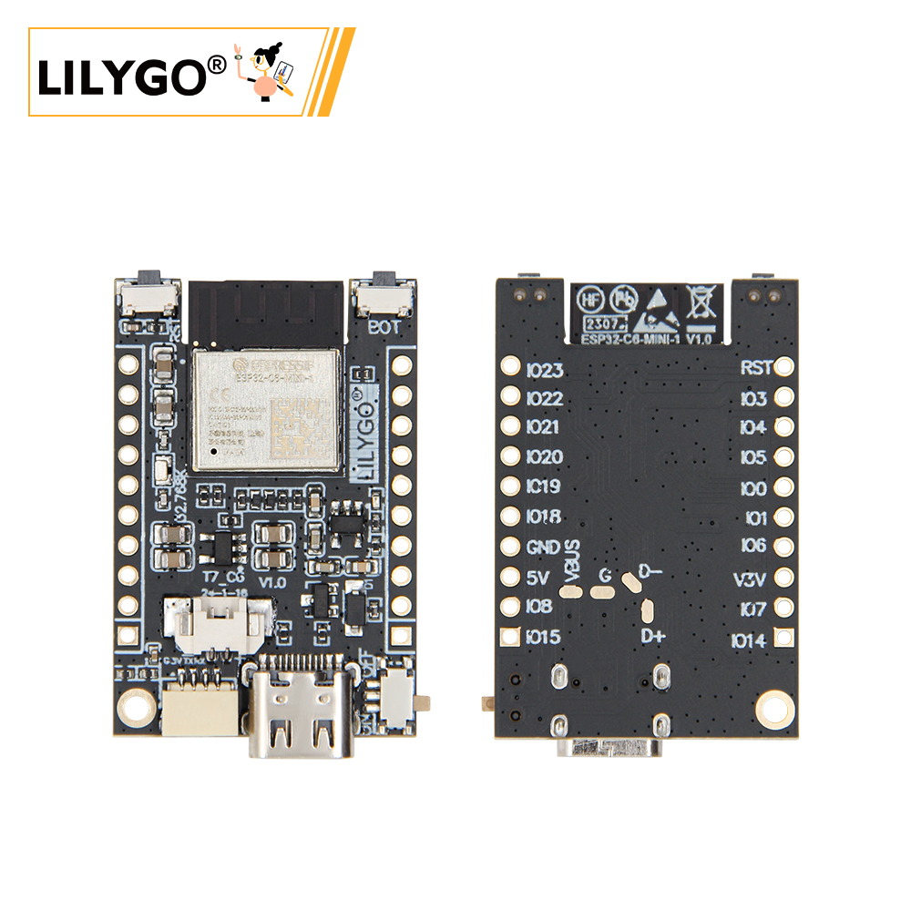
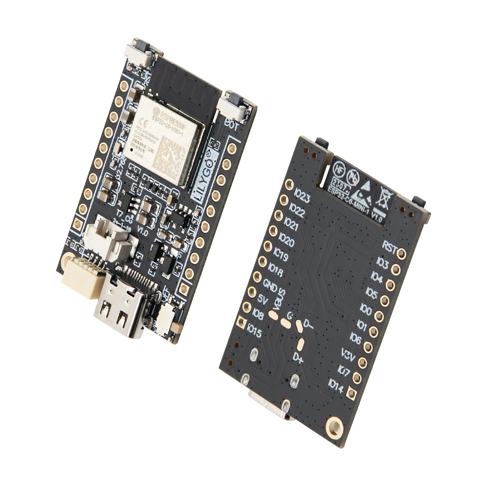
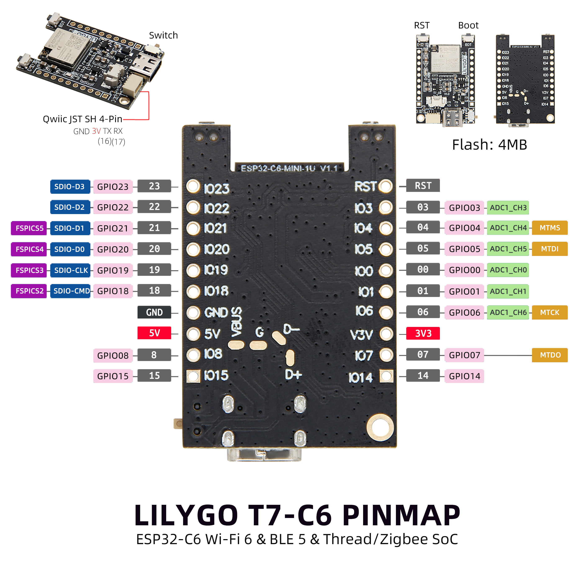

中文 简体
中文 简体LILYGO T7 C6

版本迭代:
| Version | Update date | Update description |
|---|---|---|
| T7-C6_V1.0 | 最新版本 | 基于ESP32-C6的Wi-Fi 6开发板初始版本 |
购买链接
| Product | SOC | FLASH | Wireless | Protocol | Link |
|---|---|---|---|---|---|
| T7 C6 | ESP32-C6-MINI-1 | 4M | Wi-Fi 6 + BT 5 | Thread/Zigbee | [购买链接待添加] |
目录
描述
LILYGO T7-C6 是一款基于 ESP32-C6 芯片的开发板，集成了 Wi-Fi 6、蓝牙 5（BLE）以及 Thread/Zigbee 支持，适用于物联网和无线通信项目。该开发板提供丰富的 GPIO 引脚（GPIO0-GPIO23），支持 ADC（模数转换）功能，并内置 4MB Flash 存储。
其引脚布局兼容常见的 JST SH 4-Pin 接口（GND、3V、TX、RX），同时具备 SPI（SDIO）通信能力，适合连接传感器或其他外设。此外，开发板还支持 5V 和 3.3V 电源输出，方便为不同设备供电，集成 TP4065 电池充电芯片，是开发者实现智能家居、远程监控等应用的理想选择。
预览
实物图

引脚图

模块
MCU
- 芯片：ESP32-C6-MINI-1
- FLASH：4MB
- 架构：RISC-V 32位单核处理器
- 主频：160MHz
无线通信
- Wi-Fi：2.4GHz Wi-Fi 6 (802.11ax)
- 蓝牙：Bluetooth 5 Low Energy
- 其他协议：IEEE 802.15.4 (Thread/Zigbee)
电源管理
- 充电芯片：TP4065
- 输入电压：5V
- 输出：3.3V
概述
| 组件 | 描述 |
|---|---|
| MCU | ESP32-C6-MINI-1 |
| FLASH | 4MB |
| 无线 | Wi-Fi 6 + Bluetooth 5 LE + Thread/Zigbee |
| 充电芯片 | TP4065 |
| GPIO | GPIO0-GPIO23 |
| 通信接口 | SPI, UART, I2C, ADC |
| 拓展接口 | QWIIC接口 |
| 按键 | RST + BOOT |
| 电源输入 | 5V/500mA |
| 孔位 | 2mm定位孔 |
| 尺寸 | 尺寸信息待补充 |
快速开始
示例支持
| Example | Support IDE And Version | Description | Picture |
|---|---|---|---|
| Battery Voltage Measure | [Arduino IDE][esp32_v3.0.0-rc3] |
||
| ESP32 Deep Sleep | [Arduino IDE][esp32_v3.0.0-rc3] |
||
| Original Test | [Arduino IDE][esp32_v3.0.0-rc3] |
出厂初始测试文件 | |
| Wifi STA | [Arduino IDE][esp32_v3.0.0-rc3] |
| firmware | Description | Picture |
|---|---|---|
| Original Test V1.0.0 | 初始版本 | |
| Original Test V1.0.1 | 修复串口调试 |
PlatformIO
- 安装 Visual Studio Code。
- 在扩展中搜索并安装 "PlatformIO IDE"。
- 从 GitHub 下载 T7-C6 项目代码。
- 在 VS Code 中打开项目文件夹，编辑
platformio.ini文件选择所需环境。 - 连接设备，编译并烧录程序。
Arduino
- 安装 Arduino IDE。
- 添加 ESP32 开发板支持（Espressif Systems）。
- 在 "开发板管理器" 中选择
ESP32C6 Dev Module。 - 配置如下设置：
ESP32-C6 (T7 C6)
| Setting | Value |
|---|---|
| Board | ESP32C6 Dev Module |
| Upload Speed | 921600 |
| CPU Frequency | 160MHz |
| Flash Size | 4MB (32Mb) |
| Flash Mode | QIO |
| Partition Scheme | Huge APP (3MB No OTA/1MB SPIFFS) |
| Core Debug Level | None |
- 选择正确端口，编译并烧录。
开发平台
引脚总览
| 功能模块 | ESP32-C6引脚 | 描述 |
|---|---|---|
| UART0 | GPIO20(TX), GPIO21(RX) | 默认串口 |
| UART1 | GPIO8(TX), GPIO9(RX) | 备用串口 |
| SPI | GPIO10-13 | SPI接口 |
| I2C | GPIO4(SDA), GPIO5(SCL) | I2C接口 |
| ADC | GPIO0-3 | 模拟输入 |
| PWM | 多个GPIO | PWM输出 |
| QWIIC | GPIO4(SDA), GPIO5(SCL) | I2C扩展 |
相关测试
测试数据待补充
常见问题
Q. ESP32-C6 相比 ESP32 有什么优势？
A. ESP32-C6 支持 Wi-Fi 6，提供更好的网络性能和能效，同时集成了 Thread/Zigbee 协议支持。Q. 如何为开发板供电？
A. 通过 Type-C 接口提供 5V 电源，或者通过电池接口连接锂电池。Q. 支持哪些无线协议？
A. 支持 Wi-Fi 6、Bluetooth 5 LE 和 IEEE 802.15.4（Thread/Zigbee）。Q. 程序烧录失败怎么办？
A. 确保驱动安装正确，按住 BOOT 按键再点击 RESET 进入下载模式。Q. 如何连接外部传感器？
A. 可以通过 GPIO 引脚直接连接，或者使用 QWIIC 接口连接兼容的 I2C 设备。
项目
资料
依赖库
- ESP32 Arduino Core - ESP32-C6 Arduino支持
- WiFi - Wi-Fi连接库
- BluetoothSerial - 蓝牙串口库
- ArduinoThread - 线程管理库